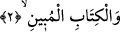
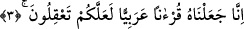

2. Apaçık Kitab’a andolsun ki,
Onların kendi dilleri ve üslupları üzere olduğu için kendilerine indirilen “apaçık
kitaba yemin olsun.”
Burada kitap üzerine yemin edildiği için bu kelime harf-i cer olan yemin vavı ile
başladığından mecrûrdur. Yahut gizli bir “yemin bâ”sı ile takdîren mecrûr olan “Hâ
Mîm” üzerine mâtuftur. Buna göre atfın merkezi konumunda olan mâtufla mâtufun aleyh
arasında mutlak bir farklılık olmalıdır. Yeminin tekrar edilmesinin nüktesi ise yemin
cümlesinin mânâsını teyit etmektir.
“Apaçık” yani onların üslup ve dilleriyle geldiği için kitabın indirildiği kimselere
açık olan. Bu konuma göre “ebâne” fiili “bâne” yani “zahara” zâhir ve açık oldu
mânâsına gelmektedir. Yahut buradaki “mübîn” kelimesi sapıklığı ve hidâyet yolunu
beyan eden, din konusunda ihtiyaç duyulan her şeyi îzâh eden, demektir. Buna göre
“bâne” kelimesi “azhare” ve “evdahe” yani açıkladı ve izah etti mânâsında olur.
Sehl şöyle demiştir: Kur’an’da hidâyet sapıklıktan, hayır şerden, iyilik kötülükten,
mutlu insanların saâdeti, kötü insanların şakâvet ve kötülüklerinden ayrılmıştır. Bazıları
burada kitaptan maksadın “hat” yani yazıdır, demişlerdir. “Ketebehü-ketben ve
kitâben”in mânâsı “hattahu” yani yazdı demektir. Allah Teâlâ bu konudaki nimetin
büyüklüğünden dolayı buna yemin etmektedir. Çünkü hat ve yazmanın çok faydaları
vardır. Zîrâ ilimler hep yazı sebebiyle tekâmül edip gelişme göstermişlerdir. İşte önde
ve önce gelen âlimler bir ilmi ortaya koyup onu yazıyla bir kitapta ispat edince, sonra
gelenler de buna bazı ilâveler yapar ve bu şekilde ilmin faydası bir hayli çoğalmış olur.
Fakir Bursevî der ki: Belki de âyeti pek de zâhir olmayan böyle bir mânâya
hamletmek, yemin ile yemin edilen şeyin bir olma lüzûmuna binâendir. Ki bu, buradaki
kitap ifâdesini doğrudan Kur’an olarak takdir etmeye bağlıdır. Ancak durum böyle
değildir. Bunun îzâhı ileride gelecektir.
3. Biz, anlayıp düşünmeniz için onu Arapça bir Kur’an kıldık.
“Biz, anlayıp düşünmeniz için onu” Arap lügati ve Arap diliyle indirerek ondaki
gerek lafzî; gerek mânevî güzellikleri ve üstünlükleri kavramanız için “Arapça bir
Kur’ân kıldık.”
Şâyet sen, “Bu ifâde Kur’an’ın “mec’ûl” yani yapılmış olduğuna delâlet eder. Mec’ûl
olan şey ise mahluk yani yaratılmış demektir. Halbuki Peygamberimiz (s.a.) «Kur’an
Allah’ın kelamı olup mahluk değildir»[144] buyurmuşlardır” dersen şöyle cevap
veririm: “Kur’ân’ın mec’ûl olması onun bir halden diğer bir hâle intikâl ettirilmiş